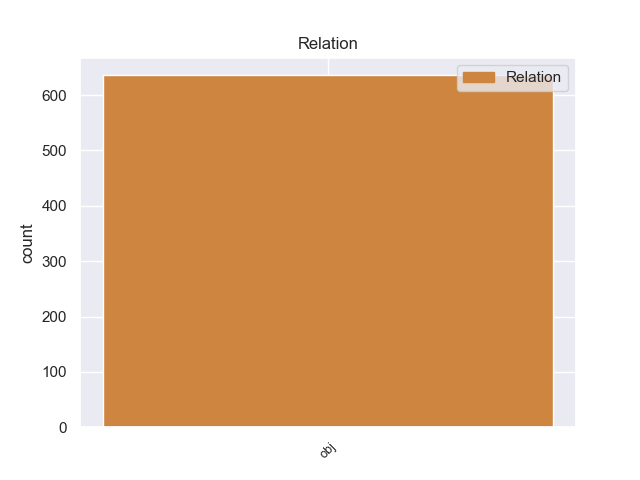
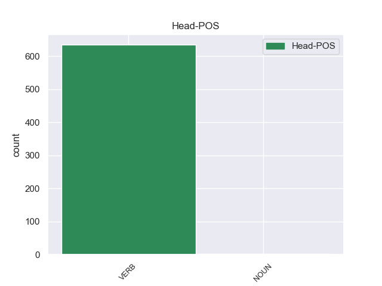
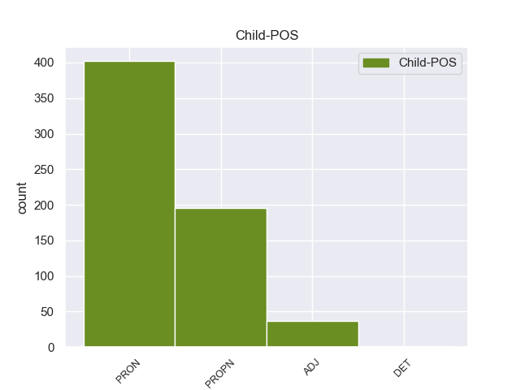

Distribution of features within this leaf



Agreement Rules sorted by frequency.
- When the dependent token is the object(obj) of the head token, and the head token is VERB and the dependent token is PRON.
1 Я _ _ _ _ 0 _ _ _
2 изрезал _ _ _ _ 0 _ _ _
3 ладони _ _ _ _ 0 _ _ _
4 , _ _ _ _ 0 _ _ _
5 пока _ _ _ _ 0 _ _ _
6 , _ _ _ _ 0 _ _ _
7 наконец _ _ _ _ 0 _ _ _
8 , _ _ _ _ 0 _ _ _
9 выдрал выдрать VERB _ Aspect=Perf|Gender=Masc|Mood=Ind|Number=Sing|Tense=Past|VerbForm=Fin|Voice=Act 0 _ _ _
10 его он PRON _ Case=Acc|Gender=Masc|Number=Sing|Person=3 9 obj 9:obj _
11 из _ _ _ _ 0 _ _ _
12 земли _ _ _ _ 0 _ _ _
13 . _ _ _ _ 0 _ _ _
1 Павлова Павлов PROPN _ Animacy=Anim|Case=Acc|Gender=Masc|Number=Sing 10 obj 10:obj SpaceAfter=No
2 , _ _ _ _ 0 _ _ _
3 его _ _ _ _ 0 _ _ _
4 жену _ _ _ _ 0 _ _ _
5 , _ _ _ _ 0 _ _ _
6 их _ _ _ _ 0 _ _ _
7 родителей _ _ _ _ 0 _ _ _
8 и _ _ _ _ 0 _ _ _
9 дедов _ _ _ _ 0 _ _ _
10 вскормил вскормить VERB _ Aspect=Perf|Gender=Masc|Mood=Ind|Number=Sing|Tense=Past|VerbForm=Fin|Voice=Act 0 _ _ _
11 город _ _ _ _ 0 _ _ _
12 , _ _ _ _ 0 _ _ _
13 но _ _ _ _ 0 _ _ _
14 давние _ _ _ _ 0 _ _ _
15 предки _ _ _ _ 0 _ _ _
16 Павлова _ _ _ _ 0 _ _ _
17 были _ _ _ _ 0 _ _ _
18 доброй _ _ _ _ 0 _ _ _
19 крестьянской _ _ _ _ 0 _ _ _
20 , _ _ _ _ 0 _ _ _
21 " _ _ _ _ 0 _ _ _
22 пскопской _ _ _ _ 0 _ _ _
23 " _ _ _ _ 0 _ _ _
24 закваски _ _ _ _ 0 _ _ _
25 , _ _ _ _ 0 _ _ _
26 и _ _ _ _ 0 _ _ _
27 казалось _ _ _ _ 0 _ _ _
28 , _ _ _ _ 0 _ _ _
29 сродство _ _ _ _ 0 _ _ _
30 славных _ _ _ _ 0 _ _ _
31 кривичей _ _ _ _ 0 _ _ _
32 с _ _ _ _ 0 _ _ _
33 миром _ _ _ _ 0 _ _ _
34 чистой _ _ _ _ 0 _ _ _
35 природы _ _ _ _ 0 _ _ _
36 через _ _ _ _ 0 _ _ _
37 поколения _ _ _ _ 0 _ _ _
38 в _ _ _ _ 0 _ _ _
39 полной _ _ _ _ 0 _ _ _
40 сохранности _ _ _ _ 0 _ _ _
41 передалось _ _ _ _ 0 _ _ _
42 двум _ _ _ _ 0 _ _ _
43 маленьким _ _ _ _ 0 _ _ _
44 горожанам _ _ _ _ 0 _ _ _
45 , _ _ _ _ 0 _ _ _
46 не _ _ _ _ 0 _ _ _
47 испытавшим _ _ _ _ 0 _ _ _
48 и _ _ _ _ 0 _ _ _
49 минутной _ _ _ _ 0 _ _ _
50 растерянности _ _ _ _ 0 _ _ _
51 в _ _ _ _ 0 _ _ _
52 мире _ _ _ _ 0 _ _ _
53 деревьев _ _ _ _ 0 _ _ _
54 , _ _ _ _ 0 _ _ _
55 трав _ _ _ _ 0 _ _ _
56 , _ _ _ _ 0 _ _ _
57 птиц _ _ _ _ 0 _ _ _
58 , _ _ _ _ 0 _ _ _
59 широких _ _ _ _ 0 _ _ _
60 далей _ _ _ _ 0 _ _ _
61 и _ _ _ _ 0 _ _ _
62 большого _ _ _ _ 0 _ _ _
63 неба _ _ _ _ 0 _ _ _
64 . _ _ _ _ 0 _ _ _
1 Происходила _ _ _ _ 0 _ _ _
2 Марья _ _ _ _ 0 _ _ _
3 Федоровна _ _ _ _ 0 _ _ _
4 из _ _ _ _ 0 _ _ _
5 коренных _ _ _ _ 0 _ _ _
6 питерских _ _ _ _ 0 _ _ _
7 рабочих _ _ _ _ 0 _ _ _
8 и _ _ _ _ 0 _ _ _
9 сама сам ADJ _ Case=Nom|Degree=Pos|Gender=Fem|Number=Sing 11 obj 11:obj _
10 себя _ _ _ _ 0 _ _ _
11 называла называть VERB _ Aspect=Imp|Gender=Fem|Mood=Ind|Number=Sing|Tense=Past|VerbForm=Fin|Voice=Act 0 _ _ _
12 " _ _ _ _ 0 _ _ _
13 пролетария _ _ _ _ 0 _ _ _
14 всех _ _ _ _ 0 _ _ _
15 стран _ _ _ _ 0 _ _ _
16 " _ _ _ _ 0 _ _ _
17 . _ _ _ _ 0 _ _ _
1 У _ _ _ _ 0 _ _ _
2 сторонников _ _ _ _ 0 _ _ _
3 теории _ _ _ _ 0 _ _ _
4 медленного _ _ _ _ 0 _ _ _
5 остывания _ _ _ _ 0 _ _ _
6 Земли _ _ _ _ 0 _ _ _
7 излюбленным _ _ _ _ 0 _ _ _
8 является _ _ _ _ 0 _ _ _
9 следующий _ _ _ _ 0 _ _ _
10 аргумент _ _ _ _ 0 _ _ _
11 : _ _ _ _ 0 _ _ _
12 если _ _ _ _ 0 _ _ _
13 глобальный _ _ _ _ 0 _ _ _
14 климат _ _ _ _ 0 _ _ _
15 Земли _ _ _ _ 0 _ _ _
16 в _ _ _ _ 0 _ _ _
17 настоящее _ _ _ _ 0 _ _ _
18 время _ _ _ _ 0 _ _ _
19 испытывает _ _ _ _ 0 _ _ _
20 потепление _ _ _ _ 0 _ _ _
21 , _ _ _ _ 0 _ _ _
22 то _ _ _ _ 0 _ _ _
23 , _ _ _ _ 0 _ _ _
24 скорее _ _ _ _ 0 _ _ _
25 всего _ _ _ _ 0 _ _ _
26 , _ _ _ _ 0 _ _ _
27 это это PRON _ Animacy=Inan|Case=Acc|Gender=Neut|Number=Sing 32 obj 32:obj _
28 не _ _ _ _ 0 _ _ _
29 более _ _ _ _ 0 _ _ _
30 чем _ _ _ _ 0 _ _ _
31 временное _ _ _ _ 0 _ _ _
32 явление явление NOUN _ Animacy=Inan|Case=Nom|Gender=Neut|Number=Sing 0 _ _ _
33 , _ _ _ _ 0 _ _ _
34 причину _ _ _ _ 0 _ _ _
35 которого _ _ _ _ 0 _ _ _
36 надо _ _ _ _ 0 _ _ _
37 искать _ _ _ _ 0 _ _ _
38 в _ _ _ _ 0 _ _ _
39 локальных _ _ _ _ 0 _ _ _
40 процессах _ _ _ _ 0 _ _ _
41 , _ _ _ _ 0 _ _ _
42 например _ _ _ _ 0 _ _ _
43 в _ _ _ _ 0 _ _ _
44 изменениях _ _ _ _ 0 _ _ _
45 циркуляции _ _ _ _ 0 _ _ _
46 океанических _ _ _ _ 0 _ _ _
47 течений _ _ _ _ 0 _ _ _
48 . _ _ _ _ 0 _ _ _
Disagree Examples:
1 В _ _ _ _ 0 _ _ _
2 анкете _ _ _ _ 0 _ _ _
3 было _ _ _ _ 0 _ _ _
4 сказано _ _ _ _ 0 _ _ _
5 , _ _ _ _ 0 _ _ _
6 что _ _ _ _ 0 _ _ _
7 Ефимова _ _ _ _ 0 _ _ _
8 , _ _ _ _ 0 _ _ _
9 Евгения _ _ _ _ 0 _ _ _
10 Васильевна _ _ _ _ 0 _ _ _
11 , _ _ _ _ 0 _ _ _
12 женского _ _ _ _ 0 _ _ _
13 пола _ _ _ _ 0 _ _ _
14 , _ _ _ _ 0 _ _ _
15 русская _ _ _ _ 0 _ _ _
16 , _ _ _ _ 0 _ _ _
17 родилась _ _ _ _ 0 _ _ _
18 в _ _ _ _ 0 _ _ _
19 1922 _ _ _ _ 0 _ _ _
20 году _ _ _ _ 0 _ _ _
21 , _ _ _ _ 0 _ _ _
22 в _ _ _ _ 0 _ _ _
23 семье _ _ _ _ 0 _ _ _
24 рабочего _ _ _ _ 0 _ _ _
25 , _ _ _ _ 0 _ _ _
26 в _ _ _ _ 0 _ _ _
27 1940 _ _ _ _ 0 _ _ _
28 году _ _ _ _ 0 _ _ _
29 поступила _ _ _ _ 0 _ _ _
30 в _ _ _ _ 0 _ _ _
31 Ленинградский _ _ _ _ 0 _ _ _
32 институт _ _ _ _ 0 _ _ _
33 , _ _ _ _ 0 _ _ _
34 окончила окончить VERB _ Aspect=Perf|Gender=Fem|Mood=Ind|Number=Sing|Tense=Past|VerbForm=Fin|Voice=Act 0 _ _ _
35 его он PRON _ Case=Acc|Gender=Masc|Number=Sing|Person=3 34 obj 34:obj _
36 с _ _ _ _ 0 _ _ _
37 отличием _ _ _ _ 0 _ _ _
38 и _ _ _ _ 0 _ _ _
39 получила _ _ _ _ 0 _ _ _
40 квалификацию _ _ _ _ 0 _ _ _
41 инженера _ _ _ _ 0 _ _ _
42 - _ _ _ _ 0 _ _ _
43 электрика _ _ _ _ 0 _ _ _
44 по _ _ _ _ 0 _ _ _
45 радиосвязи _ _ _ _ 0 _ _ _
46 . _ _ _ _ 0 _ _ _
1 Из-за _ _ _ _ 0 _ _ _
2 этого _ _ _ _ 0 _ _ _
3 в _ _ _ _ 0 _ _ _
4 прошлую _ _ _ _ 0 _ _ _
5 среду _ _ _ _ 0 _ _ _
6 Семен _ _ _ _ 0 _ _ _
7 Еремеевич _ _ _ _ 0 _ _ _
8 и _ _ _ _ 0 _ _ _
9 попросил просить VERB _ Aspect=Perf|Gender=Masc|Mood=Ind|Number=Sing|Tense=Past|VerbForm=Fin|Voice=Act 0 _ _ _
10 ее она PRON _ Case=Acc|Gender=Fem|Number=Sing|Person=3 9 obj 9:obj _
11 зайти _ _ _ _ 0 _ _ _
12 через _ _ _ _ 0 _ _ _
13 неделю _ _ _ _ 0 _ _ _
14 . _ _ _ _ 0 _ _ _
1 Он _ _ _ _ 0 _ _ _
2 попросил просить VERB _ Aspect=Perf|Gender=Masc|Mood=Ind|Number=Sing|Tense=Past|VerbForm=Fin|Voice=Act 0 _ _ _
3 Евгению Евгения PROPN _ Animacy=Anim|Case=Acc|Gender=Fem|Number=Sing 2 obj 2:obj _
4 Васильевну _ _ _ _ 0 _ _ _
5 подождать _ _ _ _ 0 _ _ _
6 еще _ _ _ _ 0 _ _ _
7 недельку _ _ _ _ 0 _ _ _
8 и _ _ _ _ 0 _ _ _
9 , _ _ _ _ 0 _ _ _
10 как _ _ _ _ 0 _ _ _
11 только _ _ _ _ 0 _ _ _
12 она _ _ _ _ 0 _ _ _
13 вышла _ _ _ _ 0 _ _ _
14 , _ _ _ _ 0 _ _ _
15 заказал _ _ _ _ 0 _ _ _
16 междугородный _ _ _ _ 0 _ _ _
17 разговор _ _ _ _ 0 _ _ _
18 . _ _ _ _ 0 _ _ _
1 Такая _ _ _ _ 0 _ _ _
2 постановка _ _ _ _ 0 _ _ _
3 дела _ _ _ _ 0 _ _ _
4 возмутила возмутить VERB _ Aspect=Perf|Gender=Fem|Mood=Ind|Number=Sing|Tense=Past|VerbForm=Fin|Voice=Act 0 _ _ _
5 Семена Семен PROPN _ Animacy=Anim|Case=Acc|Gender=Masc|Number=Sing 4 obj 4:obj _
6 Еремеевича _ _ _ _ 0 _ _ _
7 . _ _ _ _ 0 _ _ _
1 К _ _ _ _ 0 _ _ _
2 своему _ _ _ _ 0 _ _ _
3 удивлению _ _ _ _ 0 _ _ _
4 , _ _ _ _ 0 _ _ _
5 в _ _ _ _ 0 _ _ _
6 приемной _ _ _ _ 0 _ _ _
7 он _ _ _ _ 0 _ _ _
8 увидел видеть VERB _ Aspect=Perf|Gender=Masc|Mood=Ind|Number=Sing|Tense=Past|VerbForm=Fin|Voice=Act 0 _ _ _
9 Ефимову Ефимова PROPN _ Animacy=Anim|Case=Acc|Gender=Fem|Number=Sing 8 obj 8:obj SpaceAfter=No
10 . _ _ _ _ 0 _ _ _